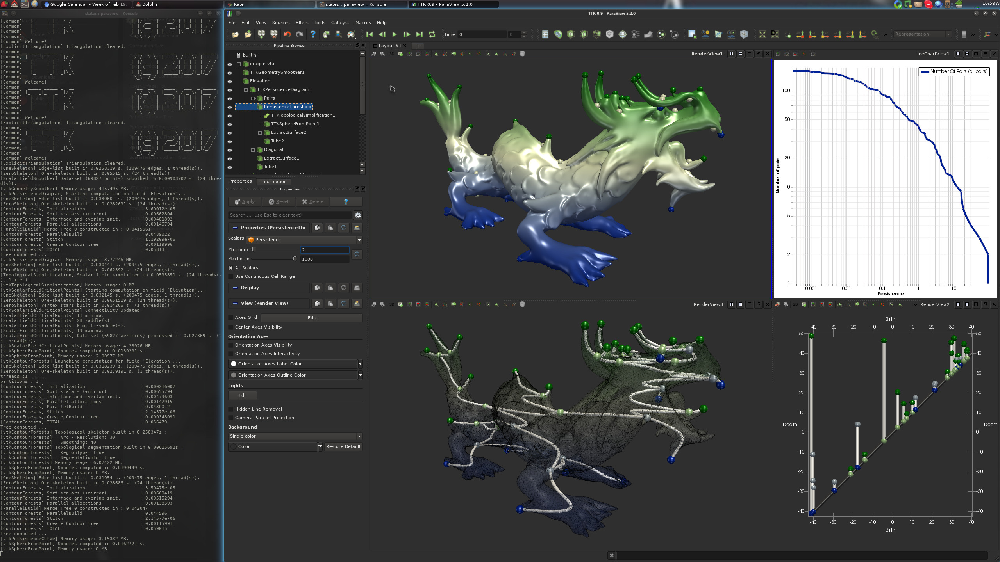
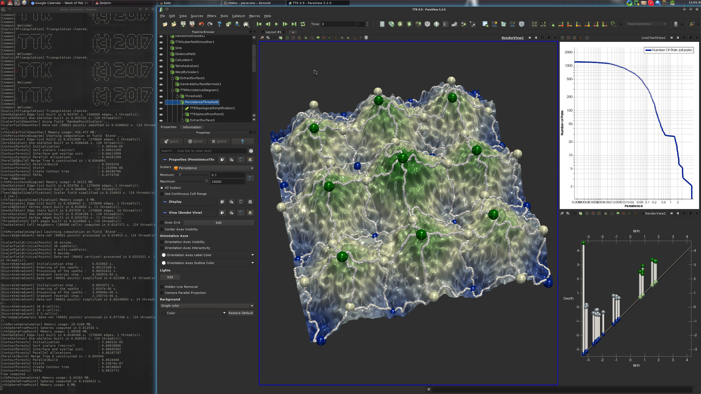
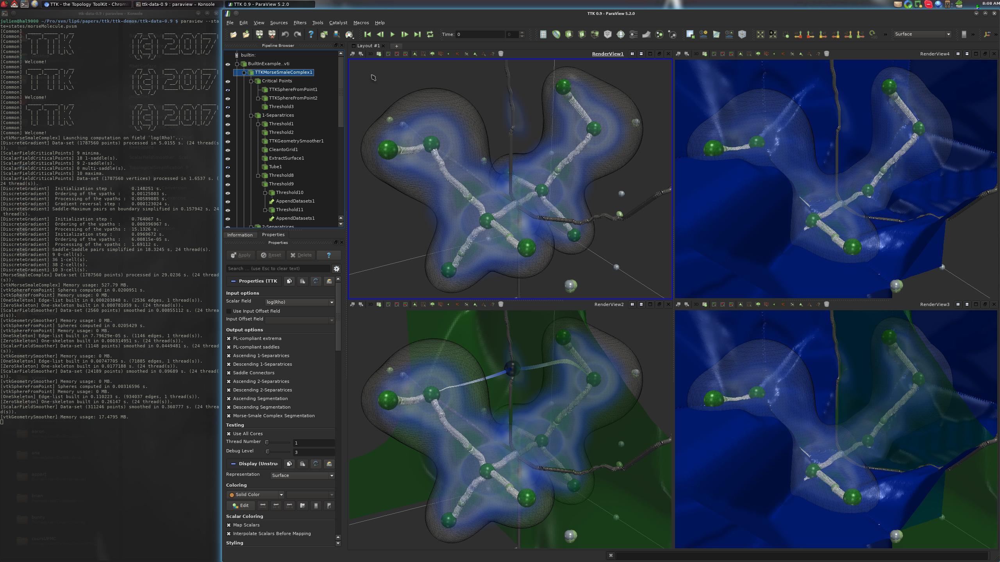
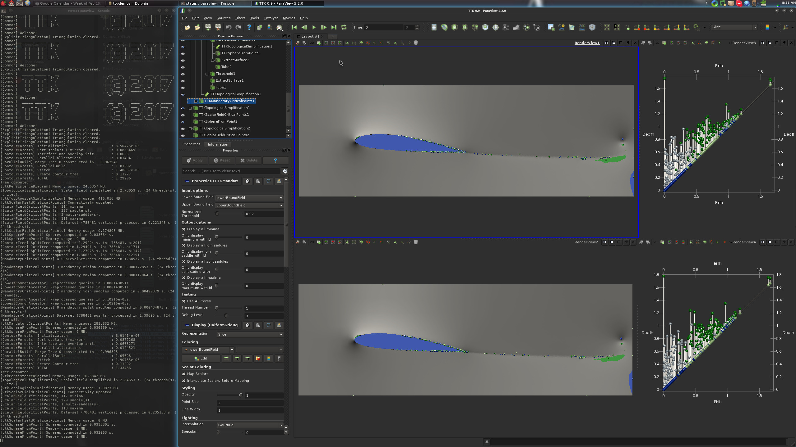

Enjoy our TTK eye candy with this gallery of screen-shots showing TTK features in action. Please visit our tutorial page for videos showing how to reproduce these visualizations with the example data-sets available from the download page.
A list of third-party projects using TTK is available here.
Scalar data |
Dragon demoTTK features in action: ContourForests, GeometrySmoother, PersistenceCurve, PersistenceDiagram, ScalarFieldCriticalPoints, SphereFromPoint, TopologicalSimplification. |
Morse persistence demoTTK features in action: MorseSmaleComplex, PersistenceCurve, PersistenceDiagram, ScalarFieldSmoother, SphereFromPoint, TopologicalSimplification. |
Built-in Example 1TTK features in action: PersistenceCurve, PersistenceDiagram, ScalarFieldCriticalPoints, ScalarFieldNormalizer, SphereFromPoint, TopologicalSimplification.
|
Interaction site demoTTK features in action: ContourForests, GeometrySmoother, PersistenceCurve, PersistenceDiagram, ScalarFieldCriticalPoints, ScalarFieldNormalizer, SphereFromPoint, TopologicalSimplification.
|
Viscous fingering demoTTK features in action: ComponentSize, DistanceField, GeometrySmoother, Identifiers, IntegralLines, PersistenceCurve, PersistenceDiagram, ScalarFieldCriticalPoints, SphereFromPoint.
|
Morse molecule demoTTK features in action: GeometrySmoother, MorseSmaleComplex, SphereFromPoint. |
Bivariate scalar data |
Built-in Example 2TTK features in action: ContinuousScatterplot, FiberSurface, JacobiSet, ProjectionFromField, RangePolygon.
|
Bivariate toy demoTTK features in action: ContourForests, Fiber, GeometrySmoother, JacobiSet, ProjectionFromField, ReebSpace, ScalarFieldCriticalPoints, SphereFromPoint, TextureMapFromField.
|
Bivariate toy CSP peeling demoTTK features in action: ContinuousScatterplot, GeometrySmoother, ProjectionFromField, ReebSpace.
|
Mechanical demoTTK features in action: ContinuousScatterplot, GeometrySmoother, ProjectionFromField, ReebSpace.
|
Uncertain scalar data |
Built-in Example 3TTK features in action: MandatoryCriticalPoints, PeristenceDiagram, ScalarFieldCriticalPoints, SphereFromPoint, TopologicalSimplification.
|
Uncertain starting vortex demoTTK features in action: MandatoryCriticalPoints, PeristenceDiagram, ScalarFieldCriticalPoints, SphereFromPoint, TopologicalSimplification. |